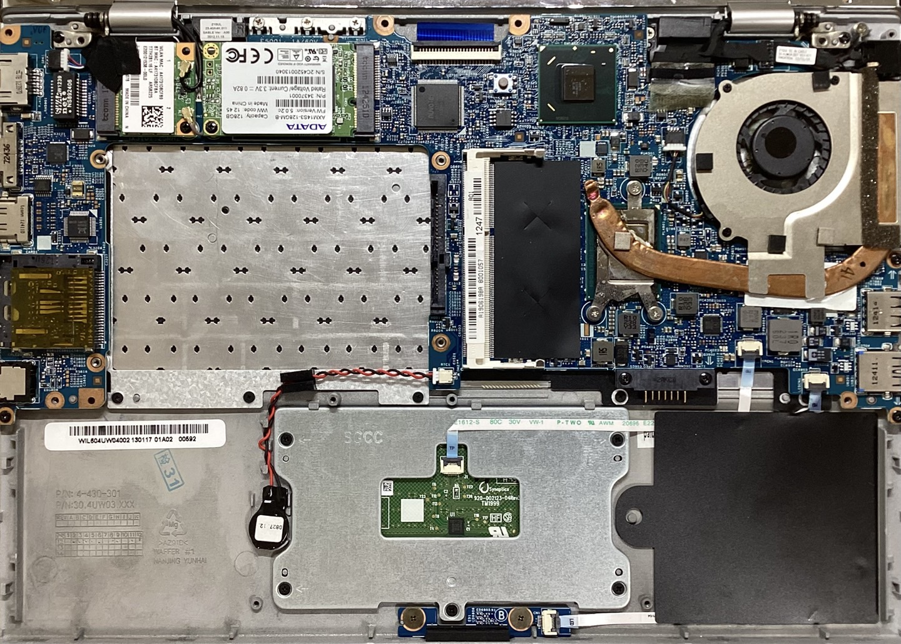

前回のジャンク購入記事はご覧になったでしょうか。
今回はそのジャンクなVAIOのメンテナンスと、デュアルブート化を行います。
ここでこんなことをする理由を書いておきます。
- ファンがうるさい
- Windowsも必要だがUbuntuも必要
メンテナンスと言っても、簡単なことしかしません。
グリスの塗り替えだけ行います。
メンテナンス
まず、分解していきます。
経験上、VAIOは分解が面倒です。
Dynabookほどではないものの、ツメだらけで本当に開けにくいです。
まず、バッテリーを外しましょう。
このVAIOはバッテリーを外さないと物理的にメモリーにアクセスできないという優秀な設計をしています。
バッテリーには3つのコインネジがあります。
まぁ普通に幅の合うマイナスドライバーで回すのが吉です。
バッテリーを取り外すと、メモリーにアクセスするための蓋のネジが現れます。
ここまで来たら、バッテリ接続端子(本体側)以外のネジを全て外します。
さぁ、いよいよツメとの戦いが始まります。
個人的には分解用プラスチックピックがおすすめです。
力のかけ具合が直感的に分かるので最も安全だと思います。
まず、出っ張った端子のない側面からピックを差し込みます。
D-sub端子なんかはあとでスライドさせないと外せないので、USB側から開けます。
画面側の辺も注意が必要です。
ディスプレイコネクタを傷付けぬよう用心しましょう。
これで開きます。

画像右側にファンとヒートシンクが見えると思います。
これは一体型なのでヒントシンクを折らないように気をつけて作業します。
思いの外、ファンとヒートシンクには埃がついてなかったです。
しかし、13年もののジャンクなのでグリスは完全にカピっていました。
手持ちのMX-4グリスに塗り替えておきます。
ついでに他の部分も見ておきます。
まぁまずショックなのがSSD。
これ、M.2ではないんですよね。
いや、通常のS-ATAなら良いんですが、m-SATAかぁ…
しかもS-ATAコネクタも縦向き実装でS-ATAとは似て非ざる端子です。
m-SATA、高いからどうしようかなぁ、と言ったところです。
気が向いたら換装します。
とりあえずファンは静かになったのでヨシとします。
Ubuntuとのデュアルブート化
次に、Ubuntuとのデュアルブート化を行います。
参考程度に環境を書いておきます。
- Windows 10 Pro 22H2
- Ubuntu Desktop 24.04.2 LTS
この2つを共存させます。
正直、Ubuntuだけでも良いのですがMicrosoft365がWindowsでしか使えないため、デュアルブートにします。
まず、UbuntuのダウンロードページからISOをダウンロードします。
そして USBメモリにISOを焼きます。
別にソフトはなんでも良いですが、Raspberry Pi imagerを使っています。
ちなみにソフトの都合上Windowsをメインで使うので、ディスクのパーティション分割を行います。
ここら辺は勘でやっているのであまり参考にしてほしくないですが、まず検索欄に「ディスクの」と入れればそれっぽいソフトが候補に出るのでそれを起動します。
次にSSDを選択してUbuntu用のパーティションを用意します。
Ubuntuは最低25GBらしいので、30GBで行きます。
分割作業をしつつ、焼き終わったらPCの電源を落とし、キーボード上部のASSISTキーを押します。
そこで外部ドライブでのブートを選択して、USBを読み込ませれば勝ちです。
あとはUbuntuの指示に従ってインストールするだけです。
以上